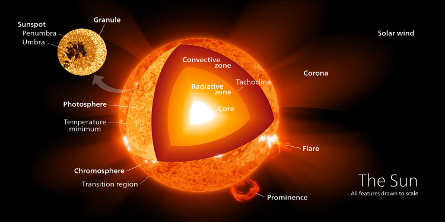

|
Sun as seen in Hydrogen-alpha light |
The Sun is the star at the center of the Solar System. It is a massive, nearly perfect sphere of hot plasma, heated to incandescence
by nuclear fusion reactions in its core, radiating the energy from its surface mainly as visible light and infrared radiation with 10% at
ultraviolet energies. It is by far the most important source of energy for life on Earth. The Sun has been an object of veneration in many
cultures. It has been a central subject for astronomical research since antiquity. The Sun orbits the Galactic Center at a distance of 24,000 to 28,000 light-years. From Earth, it is 1 astronomical unit (1.496×108 km) or about 8 light-minutes away. Its diameter is about 1,391,400 km (864,600 mi), 109 times that of Earth. Its mass is about 330,000 times that of Earth, making up about 99.86% of the total mass of the Solar System. Roughly three-quarters of the Sun's mass consists of hydrogen (~73%); the rest is mostly helium (~25%), with much smaller quantities of heavier elements, including oxygen, carbon, neon, and iron. The Sun is a G-type main-sequence star (G2V), informally called a yellow dwarf, though its light is actually white. It formed approximately 4.6 billion years ago from the gravitational collapse of matter within a region of a large molecular cloud. Most of this matter gathered in the center, whereas the rest flattened into an orbiting disk that became the Solar System. The central mass became so hot and dense that it eventually initiated nuclear fusion in its core. Every second, the Sun's core fuses about 600 billion kilograms (kg) of hydrogen into helium and converts 4 billion kg of matter into energy. |
|
The core of the Sun extends from the center to about 20–25% of the solar radius. It has a density of up to 150 g/cm3 (about 150 times the density of water)
and a temperature of close to 15.7 million kelvin (K). By contrast, the Sun's surface temperature is about 5800 K. Recent analysis of SOHO mission data favors the idea
that the core is rotating faster than the radiative zone outside it. Through most of the Sun's life, energy has been produced by nuclear fusion in the core region through
the proton–proton chain; this process converts hydrogen into helium. Currently, 0.8% of the energy generated in the Sun comes from another sequence of fusion reactions called
the CNO cycle; the proportion coming from the CNO cycle is expected to increase as the Sun becomes older and more luminous. The core is the only region of the Sun that produces an appreciable amount of thermal energy through fusion; 99% of the Sun's power is generated in the innermost 24% of its radius, and almost no fusion occurs beyond 30% of the radius. The rest of the Sun is heated by this energy as it is transferred outward through many successive layers, finally to the solar photosphere where it escapes into space through radiation (photons) or advection (massive particles) The proton–proton chain occurs around 9.2×1037 times each second in the core, converting about 3.7×1038 protons into alpha particles (helium nuclei) every second (out of a total of ~8.9×1056 free protons in the Sun), or about 6.2×1011 kg/s. However, each proton (on average) takes around 9 billion years to fuse with another using the PP chain. Fusing four free protons (hydrogen nuclei) into a single alpha particle (helium nucleus) releases around 0.7% of the fused mass as energy, so the Sun releases energy at the mass–energy conversion rate of 4.26 billion kg/s (which requires 600 billion kg of hydrogen), for 384.6 yottawatts (3.846×1026 W),or 9.192×1010 megatons of TNT per second. The large power output of the Sun is mainly due to the huge size and density of its core (compared to Earth and objects on Earth), with only a fairly small amount of power being generated per cubic metre. Theoretical models of the Sun's interior indicate a maximum power density, or energy production, of approximately 276.5 watts per cubic metre at the center of the core,which, according to Karl Kruszelnicki, is about the same power density inside a compost pile. The fusion rate in the core is in a self-correcting equilibrium: a slightly higher rate of fusion would cause the core to heat up more and expand slightly against the weight of the outer layers, reducing the density and hence the fusion rate and correcting the perturbation; and a slightly lower rate would cause the core to cool and shrink slightly, increasing the density and increasing the fusion rate and again reverting it to its present rate. |

Illustration of the Sun's structure, in false color for contras Illustration of a proton-proton reaction chain,from hydrogen forming deuterium, helium-3, and regular helium-4 |
||||||||
|
|||||||||
|---|---|---|---|---|---|---|---|---|---|
|
The brightness of the Sun can cause pain from looking at it with the naked eye; however, doing so for brief periods is not hazardous for normal non-dilated eyes.
Looking directly at the Sun (sungazing) causes phosphene visual artifacts and temporary partial blindness. It also delivers about 4 milliwatts of sunlight to the
retina, slightly heating it and potentially causing damage in eyes that cannot respond properly to the brightness. Viewing of the direct Sun with the naked eye can
cause UV-induced, sunburn-like lesions on the retina beginning after about 100 seconds, particularly under conditions where the UV light from the Sun is intense and well focused.
Viewing the Sun through light-concentrating optics such as binoculars may result in permanent damage to the retina without an appropriate filter that blocks UV and substantially dims the sunlight. When using an attenuating filter to view the Sun, the viewer is cautioned to use a filter specifically designed for that use. Some improvised filters that pass UV or IR rays, can actually harm the eye at high brightness levels. Brief glances at the midday Sun through an unfiltered telescope can cause permanent damage. During sunrise and sunset, sunlight is attenuated because of Rayleigh scattering and Mie scattering from a particularly long passage through Earth's atmosphere,and the Sun is sometimes faint enough to be viewed comfortably with the naked eye or safely with optics (provided there is no risk of bright sunlight suddenly appearing through a break between clouds). Hazy conditions, atmospheric dust, and high humidity contribute to this atmospheric attenuation An optical phenomenon, known as a green flash, can sometimes be seen shortly after sunset or before sunrise. The flash is caused by light from the Sun just below the horizon being bent (usually through a temperature inversion) towards the observer. Light of shorter wavelengths (violet, blue, green) is bent more than that of longer wavelengths (yellow, orange, red) but the violet and blue light is scattered more, leaving light that is perceived as green |
The Sun seen from Earth, with glare from the lenses. The eye also sees glare when looked towards the Sun directly. During a solar eclipse the solar corona can be seen with the naked eye during totality. |
||||||||